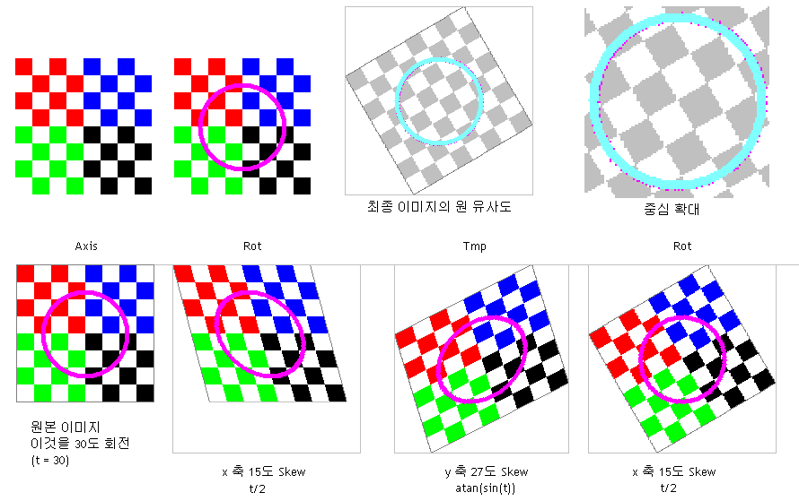

[Skew 를 이용한 Rotate 예제 - 30도 회전]
어떤 알고리즘들은 그 시도 자체가 놀랍다.
위 그림은 Skew(비스듬하게 기울이기)를 3회 이용한 이미지 Rotation(회전) 알고리즘이다.
이 회전 알고리즘의 특징은
1. 손실이 없다.
- 모든 점이 다른 위치의 한 점으로 이동한다.
2. 실수(Real number) 연산이 적다.
- 최초 회전에 필요한 sin, atan 값만 알고 있으면 된다. 회전중에는 삼각함수를 계산하지 않는다.
3. 회전 중심이 일정하지 않다.
- 중심점을 이용해 회전하지 않는다. 그대로 회전시키면 전체 위치가 이동된다. 계산을 통해 보정 가능.
이정도가 있다.
누가 기울이기 만으로 회전이 가능할꺼라고 생각했을까?
처음에는 소스코드를 보고도 그저 '적당히 유사한' 회전 이미지를 만들어내는 알고리즘 정도로 생각했다.
아무리 생각해도 기발하다.